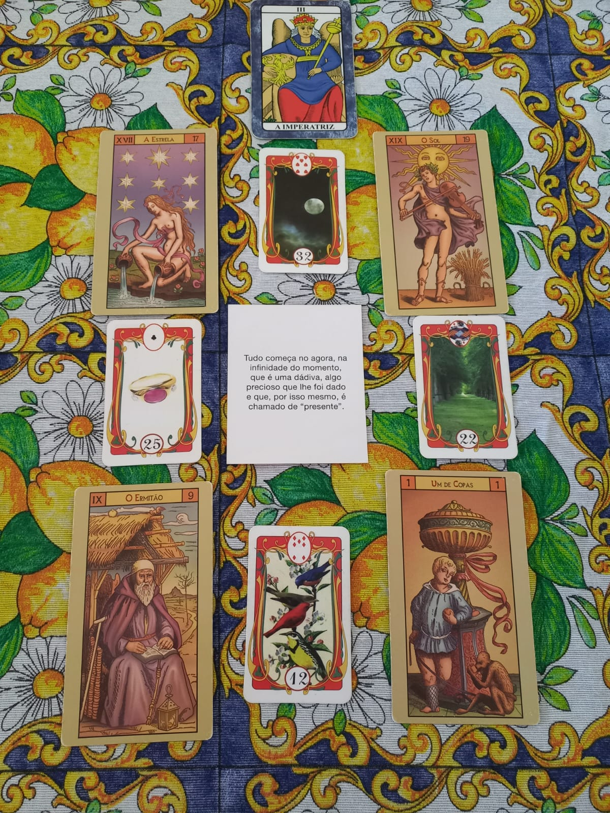

Meu nome é Camila e sou estudante de Psicanálise e de Análise e Desenvolvimento de Sistemas. Tenho uma paixão profunda por explorar as nuances da mente humana e por entender a complexidade dos sistemas de informação. Entre meus hobbies favoritos estão a leitura de tarot, que me permite conectar com aspectos intuitivos e místicos, e a prática constante da leitura e escrita, que me proporcionam um profundo prazer e um enriquecimento contínuo.
Além disso, me dedico ao estudo de misticismo e psicanálise, áreas que me fascinam e que complementam minha busca por conhecimento. Também encontro grande alegria em ouvir música e em meditar, atividades que me ajudam a encontrar equilíbrio e serenidade.